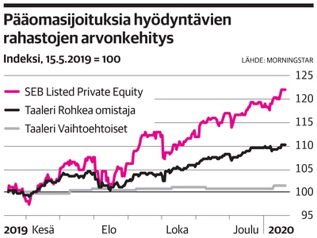

Taaleri Varainhoito - Vaihtoehtoiset sijoitukset
 Vaihda sivustoa FI EN Taaleri Oyj Taaleri Varainhoito Taaleri Energia Taaleri Kapitaali Taaleri Kiinteistöt Garantia Taaleri Digi Taaleri Raportointi Haku Ajankohtaista Instituutiot Ota yhteyttä Haku Palvelut Varainhoito digitaalisena palveluna Varainhoito henkilökohtaisena palveluna Family Office Instituutiot Arvopaperivälitys Verotus osana varainhoitoa Sijoitusratkaisut Osakesijoitukset Korkosijoitukset Vaihtoehtoiset sijoitukset Yhdistelmäratkaisut Rahastot taulukossa Tietoa yrityksestä Toimipisteet Ihmiset Impakti-sijoittaminen Valikko Sulje Palvelut Varainhoito digitaalisena palveluna Varainhoito henkilökohtaisena palveluna Family Office Instituutiot Arvopaperivälitys Verotus osana varainhoitoa Sijoitusratkaisut Osakesijoitukset Korkosijoitukset Vaihtoehtoiset sijoitukset Yhdistelmäratkaisut Rahastot taulukossa Tietoa yrityksestä Toimipisteet Ihmiset Impakti-sijoittaminen Haku Ajankohtaista Instituutiot Ota yhteyttä Haku
Vaihtoehtoiset sijoitukset
Etusivu Sijoitusratkaisut Vaihtoehtoiset sijoituksetVaihtoehtoiset sijoitukset täydentävät perinteisiä sijoituksia ja hajauttavat riskiä. Pitkäjänteiselle sijoittajalle nykyisessä alhaisten tuottojen ympäristössä vaihtoehtoiset sijoitukset ovat houkutteleva tuottolähde.
Yhdistämme ennakkoluulottomasti pääomia, ideoita ja yrittäjyyttä löytääksemme uusia houkuttelevia sijoittamisen mahdollisuuksia. Asiakkaamme voivat sijoittaa sellaisiin konkreettisiin kohteisiin, joihin yksittäiset sijoittajat eivät ole juuri aiemmin päässeet mukaan. Sijoitamme esimerkiksi uusiutuvaan energiaan, kiinteistöihin, metsään ja muihin erilaisiin liiketoimintoihin. Pääsääntöisesti toteutamme hankkeet itse alusta lähtien kohteen myyntiin saakka. Kansainväliset hankkeet toteutamme yhdessä kumppanien kanssa.
Suosittelemme nyt
Taaleri Kiinteistöt
Taalerin kiinteistösijoitusnäkemys yhdessä ratkaisussa.
Lue lisää
Kiinteistösijoitukset
Kiinteistösijoituksissa tuotto perustuu kohteiden kassavirtaan ja arvonnousun hyödyntämiseen. Sijoittamisen, rahoituksen ja rakennuttamisen erikoisosaajista koostuva kiinteistötiimimme hallinnoi kolmeatoista erilaista rahastoa. Rahastot ovat sijoittaneet mm. vuokra-asuntoihin, kiinteistökehityskohteisiin, tonttimaahan ja metsään Suomessa sekä itä-afrikkalaisiin kiinteistöhankkeisiin.
Kiinteistöt
Taalerin kiinteistösijoitusnäkemys yhdessä ratkaisussa
Lue lisääVuokrakoti
Lokakuussa 2016 perustettu Taaleri Vuokrakoti -rahasto tuo helpotusta kasvukeskusten asuntopulaan. Samalla se monipuolistaa ja helpottaa kohtuuhintaisen asumisen tarjontaa Suomen kasvukeskuksissa.
Lue lisääAsuntorahasto VI
Vahva osaaminen kiinteistösijoittamisessa.
Lue lisääAsuntorahasto IV
Vahva osaaminen kiinteistösijoittamisessa.
Lue lisääAsuntorahasto II
Vahva osaaminen kiinteistösijoittamisessa.
Lue lisääPäiväkotikiinteistöt
Rahaston tavoitteena on rakennuttaa noin 80 miljoonan euron arvoinen päiväkoti- ja hoivakiinteistörahasto sekä mahdollistaa modernien, terveiden ja turvallisten tilojen kehittäminen päivähoitoon ja hoiva-alan muille toimijoille.
Lue lisääTallikiinteistöt
Talliosakkeet ovat muuntojoustavia tiloja, joita yritykset ja yksityishenkilöt käyttävät varasto- ja toimitiloina, autotalleina sekä harrastamiseen.
Lue lisääTonttirahasto I
Asuntojen ja toimitilojen rakentaminen edellyttää rakentamistarkoitukseen kaavoitettua tonttimaata.
Lue lisääTonttirahasto II
Asuntojen ja toimitilojen rakentaminen edellyttää rakentamistarkoitukseen kaavoitettua tonttimaata.
Lue lisääKiinteistökehitysrahasto
Kiinteistökehitysrahasto jalostaa maa-alueita ja kiinteistöjä rakennuttamalla uusia kohteita, hakemalla sopivia kohteita käyttötarkoitusten muutoksille sekä tekemällä sijoituksia kiinteistökehityskohteisiin tai näitä toteuttaviin hankkeisiin.
Lue lisääLinnainmaankulma
Vahva osaaminen kiinteistösijoittamisessa.
Lue lisääMetsärahasto III
Metsärahastot mahdollistavat erilaisen metsäomistamisen mallin: hoidamme asiakkaidemme puolesta kaiken metsäsijoittamiseen liittyvän, ja tarjoamme mahdollisuuden tasaiseen ja vakaaseen kassavirtaan.
Lue lisääAfrikka I
Monet Afrikan yhteiskunnat ja kansantaloudet kehittyvät nopeasti.
Lue lisääAfrikka Rahasto II
Monet Afrikan yhteiskunnat ja kansantaloudet kehittyvät nopeasti.
Lue lisääEnergiainfra
Taaleri on uusiutuvan energian huippuosaaja. Osallistumme hankkeiden etsimiseen, kehittämiseen, rakennuttamiseen, rahoittamiseen, operointiin sekä käytöstä poistamiseen. Tämä toimintamalli erottaa meidät muista puhtaasti taloudellisista toimijoista. Olemme tuulirahastojemme kautta Suomen toiseksi suurin tuulivoimatuottaja.
Aurinkotuuli
Taaleri Aurinkotuuli on Suomen ensimmäinen kansainvälisesti uusiutuvaan energiaan sijoittava pääomarahasto ja sen sijoitusten pääpaino on aurinkoenergiassa ja tuulivoimassa.
Lue lisääAurinkotuuli II
Taaleri Aurinkotuuli II on Taalerin toinen aurinko- ja tuulienergiaan sijoittava kansainvälinen pääomarahasto.
Lue lisääTuulitehdas I
Energiantuotannolla on keskeinen rooli taistelussa ilmastonmuutosta vastaan.
Lue lisääTuulitehdas II
Energiantuotannolla on keskeinen rooli taistelussa ilmastonmuutosta vastaan.
Lue lisääTuulitehdas III
Energiantuotannolla on keskeinen rooli taistelussa ilmastonmuutosta vastaan.
Lue lisääTuulirahasto IV
Taaleri Tuulirahasto IV on Taalerin neljäs kotimaiseen tuulivoimaan sijoittava rahasto.
Lue lisääPääomasijoitukset
Taalerin kanssa pääset sijoittamaan listaamattomiin yrityksiin ja erilaisiin hankkeisiin, joissa arvoa luodaan pitkäjänteisellä omistajuudella. Lähtökohtana on aina hyvä hanke ja sitoutunut yrittäjä, joka tuo hankkeeseen toimialaosaamisen. Taaleri on vastuullinen kasvollinen omistaja, joka osallistuu kohdeyhtiön arkeen.
Biojalostamo
Investointi suomalaiseen biojalostamoon
Lue lisääKiertotalous
Sijoittajille rahasto tarjoaa mahdollisuuden yhdistää taloudelliset tavoitteet ja kestävät hyödyt ympäristölle.
Lue lisääTelakka
Taaleri Telakka omistaa noin neljänneksen Rauman telakkaa operoivasta Rauma Marine Construction Oy:sta.
Lue lisääDatacenter
Digitaaliteknologia ja siihen liittyvät palvelut ovat muuttamassa taloutta ja yhteiskuntaa tavalla, joka on verrattavissa höyryn ja sähkön hyödyntämisen aiheuttamiin muutoksiin.
Lue lisääVarustamo
Taaleri Varustamo omistaa suomalaisen Aalto Shipping ‑varustamon yhdessä yrityksen toimivan johdon kanssa.
Lue lisääListaamattomat korkosijoitukset
Listaamattomat korkosijoitukset tarjoavat houkuttelevaa tuottopotentiaalia etenkin silloin, kun yleinen korkotaso on alhainen. Vertaislainojen kautta sijoittajat pääsevät rahoittamaan suoraan muita kuluttajia. Taalerin järjestämien velkakirjaliikkeeseenlaskujen kautta asiakkaamme pääsevät rahoittamaan vieraan pääoman ehtoisesti suoraan sellaisia kohteita, jotka aiemmin rahoitettiin tyypillisesti pankkien toimesta.
Hajautetut vaihtoehtoiset sijoitukset
Hajautetuissa vaihtoehtoisissa sijoituksissa lähtökohtamme on, että sijoitukset hajautetaan sekä maantieteellisesti että yli vaihtoehtoisten omaisuusluokkien. Sijoituspäätökset nojautuvat Taalerin näkemykseen vaihtoehtoisissa sijoituksissa.
Vaihtoehtoiset
Globaalisti vaihtoehtoiseen omaisuusluokkaan sijoittava rahasto
Lue lisääAsiantuntijamme
Jan Hellman
Sijoituspäällikkö Helsinki +358 44 544 4445 jan.hellman@taaleri.comJyrki Moilanen
Rahoitusjohtaja Helsinki +358 40 767 7571 jyrki.moilanen@taaleri.comTero Luoma
Sijoitusjohtaja Taaleri Pääomarahastot OyTampere +358 50 344 9993 tero.luoma@taaleri.com
Jyrki Ketola
Johtaja, metsäsijoitukset PääomarahastotHelsinki +358 400 606 522 jyrki.ketola@Taaleri.com
Antti-Jussi Ahveninen
Johtaja, Afrikka-kiinteistöt Taaleri Pääomarahastot OyNairobi +358 46 714 7100 antti-jussi.ahveninen@taaleri.com
Maija Seppälä
Päällikkö, Kiinteistövarainhoito (Äitiyslomalla) Helsinki +358 400 618 564 maija.seppala@taaleri.comNiko Fagernäs
Salkunhoitaja Taaleri Varainhoito OyHelsinki +358 44 9818 644 niko.fagernas@taaleri.com
Pekka Samuelsson
Sijoitusjohtaja, impakti-sijoitukset Taaleri Varainhoito OyHelsinki +358 50 523 5834 pekka.samuelsson@taaleri.com
Marko Backström
Lakimies Taaleri Pääomarahastot OyHelsinki +358 45 133 8666 marko.backstrom@taaleri.com
Susanna Terhivuo
Rahoitusjohtaja Taaleri Pääomarahastot OyHelsinki +358 50 309 8976 susanna.terhivuo@taaleri.com
Kati Salo
Salkunhoitaja Taaleri Pääomarahastot OyHelsinki +358 40 129 6108 kati.salo@taaleri.com
Maarit Hannula
Lakimies Taaleri Pääomarahastot OyHelsinki +358 40 538 4101 maarit.hannula@taaleri.com
Tiina Kuivalainen
Projektipäällikkö Taaleri Pääomarahastot OyHelsinki +358 44 355 6288 tiina.kuivalainen@taaleri.com
Markus Halkola
Johtaja, Kiinteistökehitys Helsinki +358 40 834 3888 markus.halkola@taaleri.comJorma Alanne
Toimitusjohtaja, Taaleri Sijoitus Oy Taaleri Sijoitus OyHelsinki +358 50 68 865 jorma.alanne@taaleri.com Taaleri Oyj Taaleri Varainhoito Taaleri Energia Taaleri Kapitaali Taaleri Kiinteistöt Garantia
Taaleri Varainhoito Oy
Kasarmikatu 21 B
00130 Helsinki, Finland
Y-tunnus 2080113-9
asiakaspalvelu@taaleri.com
Puh. 0800 552 135
Tietosuoja
Ota yhteyttä
Sijoittajan tietopaketti
Muuta evästeasetuksiasi
Taaleri on impakti-sijoittamisen edelläkävijä.
Ajan hermolla -uutiskirjeemme ilmestyy kerran viikossa maanantaisin.
Tilaa Taalerin uutiskirje
×Tilaamalla uutiskirjeen saat joka maanantai sähköpostiisi tuoreimman näkemyksen markkinoista suoraan sijoittamisen asiantuntijoiltamme, pääset lukemaan uusimmat blogimme sekä seuraamaan, mitä muuta ympärillämme tapahtuu.